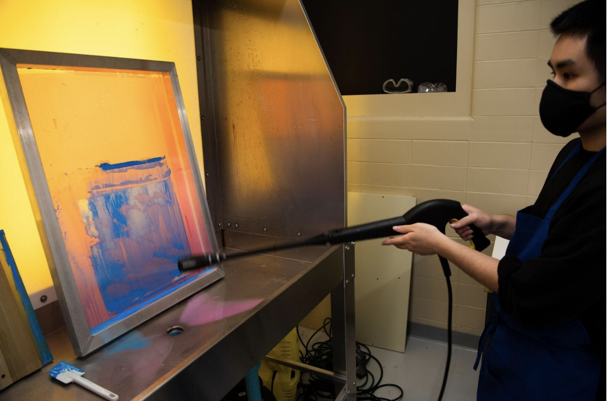

07

A
B
C
A. Once all the prints have been made and the stencil has served its purpose, the emulsion is removed using special washing fluid and the power washer so the mesh can be reused to create new stencils for someone else's project. B. Use the screen reclaimer and the power washer on high to reclaim the screen to be used again.